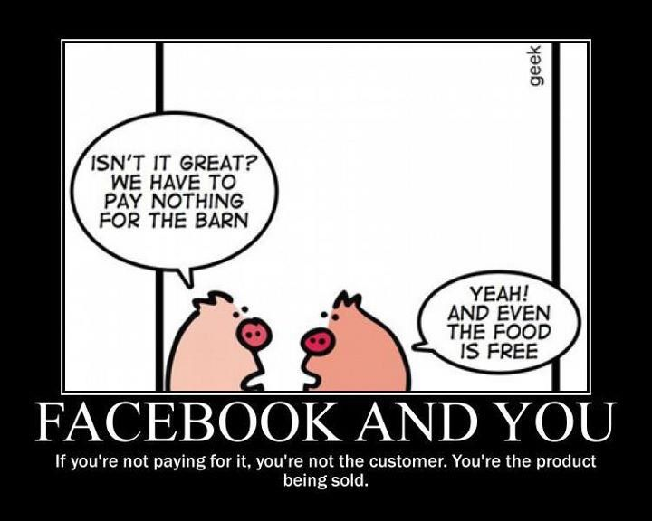

What is Smaph?
Contents
Smaph in a Nutshell
Our lifestyles are becoming more sedentary and virtual, which is detrimental for our social, mental and physical development. Upon seeing the negative impacts on myself, on my family/friends, and on my students, I started taking steps to remedy the numerous ailments. First, I worked on myself. Then, after finding the processes and methods which worked for me, I employed them on my students. Soon, not even my family and friends could escape my methods, and over many years my practice evolved into what I now call Smaph.
Smaph stands for ‘Social, mental, and physical health’. It refers to the honing of skills and qualities which are impaired by technology. With Smaph, we can counter and fortify against all the many developmental problems caused by technology and the modern world.
Our Theoretical Models
We combined three robust and battle-tested sociological models to form the theoretical basis for our Smaph services: The Health Triangle, The Fitness Pyramid, and The Pathogenesis/Salutogenesis Dichotomy.
The Health Triangle
Our theory has its origins in The Health Triangle, a globally recognised and clinically employed model used in healthcare. This 1min video breaks it down:
We actually use the Health Triangle to assess the student’s baseline health before Smaph training builds them up along the same three parameters towards social, mental and physical fitness.
The Fitness Pyramid
Introducing our own model, evolved from the Health Triangle, the Fitness Pyramid:

While the Health Triangle is an entirely valid model of health, it only gets you to a baseline state, defined by absence of disease/dysfunction (pathogenic). The Fitness Pyramid goes further, building youngsters up to their optimum state, defined by the presence of aptitudes/functions (salutogenic).
The Pathogenesis/Salutogenisis Dichotomy
Central to our practice are the concepts of pathogenesis and salutogenesis, as explained in this short video by Craig M. Becker, Professor of Health & Human Performance at East Carolina University…
So, the health triangle is pathogenic (reducing disability & dysfunction); whereas our fitness pyramid is salutogenic (increasing ability & function). The health triangle is concerned with baseline health, while the fitness pyramid is about peak health!
The Preventative Aspect
How likely is it for an amateur boxer to develop diabetes? a chess player to make irrational life decisions? or a public speaker to have social anxiety? Clearly, fitness fortifies us against health problems. It’s preventative. Smaph serves not just to optimise youngsters to their maximum potential but also to safeguard them against their potential for life problems.
Because they’re incentivised to reduce health problems, the schools in Saigon are developing good pathogenic initiatives. But they have less incentive for salutogenic programs. If you want your child to be more than baseline, then you need some kind of salutogenic practice to take them to higher levels of peak health.
Whether or not you choose to use our service, we hope we’ve convinced you of the need for salutogenic social, mental and physical training in youth development.
The Enemies of Smaph
Tech companies profit greatly from harvesting the attention and information of children, then selling that data to advertisers and market researchers. They have teams of highly-paid experts and million-dollar software working around the clock – working while you are soundly sleeping – working to hook and mesmerise our children, with no care whatsoever for their wellbeing or development. It’s disgusting and it needs to stop. But it’s only getting worse, year after year.
The tech companies position themselves as our friends – offering us free services, easy hits of dopamine, and false gratification. But have you ever wondered why they’re doing this? It is not charity. It is predatory. They are hindering youth development in all areas, for profit. They are not our friends – but our enemies.
And what formidable enemies they are – now constituting the most rich and influential corporations the world has ever seen, by far.
Our Hope
So what can we hope to do? Let’s be practical and realistic, because this is a serious issue involving youth development. I won’t make any clickbait claims. I cannot overthrow these enemies, and I cannot save the world. But I can help individuals, one at a time.
Whether or not you choose to use our service, we hope we’ve convinced you of the need for salutogenic social, mental and physical youth development to combat these destructive impacts.
To find out what I can do for your children, contact me directly for a free 30-minute smaph consultation.